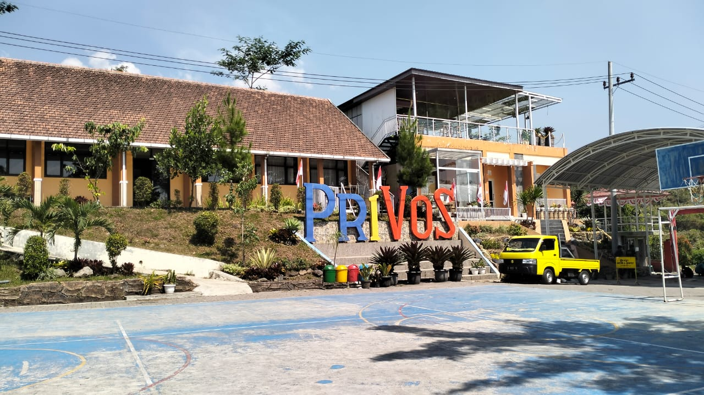

SMK Negeri Prigen didirikan pada tahun 2005 merupakan lembaga pendidikan yang terletak di jl. Pecalukan Kelurahan Ledug Kecamatan Prigen Kabupaten Pasuruan Provinsi Jawa Timur. Lokasi SMKN Progen merupakan kawasan wisata di daerah penanggungan. Karena kawasan wisata inilah yang melatarbelakangi Dinas Pendidikan Kabupaten Pasuruan untuk mendirikan SMKN Prigen dengan kompetensi keahlian Jasa Boga dan perhotelan.
Pada tahun 2005,SMKN Prigen membuka pendaftaran hanya dua kompetensi keahlian yaitu Jasa Boga dan Perhotelan. Pada tahun 2007 SMKN Prigen menambah satu kompetensi keahlian yaitu Teknik dan Bisnis Sepeda Motor (TBSM), Teknik Komputer dan Jaringan (TKJ) dan Akuntansi.
